Previous: 5.14 Quintics With a Box Point
Next: 5.16 Quintics With a Ramification Point
of Order at Least 5
Up: 5. Maximally Inflected Quintics
5.15 Maximally Inflected Quintics With a Beak
This page is under construction.
I do not know when or if it will be completed.
This file displays maximally inflected quintics with a beak, which is a
point of ramification of order 4.
The intent is to display one example of all such curves, but there a quite a
few of these curves, because there are many possibilities for the
remaining ramification, and for its placement.
The table below summarizes the possible types of ramification that can occur
in such a curve, and our symbol for each type.
The linked indices are to the spot in this file where curves with at most
that ramification are displayed.
| Name | Index | Partition
| Germ | Symbol |
| Flex | (0,1,3) | 1 |
(s,s3) |
Red Circle |
| Cusp | (0,2,3) | 11 |
(s2,s3) |
|
| Planar | (0,1,4) | 2 |
(s,s4) |
Green Circle |
| Claw | (0,2,4) | 21 |
(s2,s4)
| |
| Flat Flex | (0,1,5) | 3 |
(s,s5) |
Magenta Circle |
| Box | (0,3,4) | 22 |
(s3,s4) | |
| Beak | (0,2,5) | 31 |
(s2,s5) | |
| | (0,3,5) | 32 |
(s3,s5) |
Maroon Circle |
|
 |
| A Beak |
|
Pictures of these germs are found here.
Additional ramification of type (0,3,5).
If the rest of the ramification is concentrated in one point it must be
(0,3,5), and there is a unique such curve.
We give two different pictures of that curve:


Additional ramification of type (0,2,5).
If we have two beaks (and one flex), then there is a
unique such curve, and it has 2 solitary points,
the blue circles.
We display 2 pictures of this curve.
In the first, the flex is at infinity.
Additional ramification of type (0,3,4).
There is a unique curve with additional ramification of type (0,3,4),
a box point, indicated by a
blue circle.
We give two pictures of it.
The solitary points here, and later in this page are indicated by
blue crosses.


Additional ramification of type (0,1,5), a
flat flex.
There are curves with either a planar point or
two flexes.
For any placement of these ramification points, there is a unique curve.
There are two different isotopy classes of the placement of the flexes; either
they are consecutive, or they are not.
We display the curve with the planar point, and then two curves with flexes,
representing the different isotopy classes.
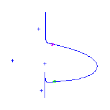
 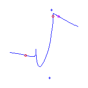
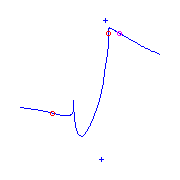
Additional ramification of type (0,2,4), a claw.
If we have a claw as well as a beak, then there can be one additional
ramification of multiplicity two, either a cusp (on the left), or a
planar point (on the right).
 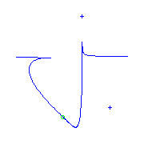
There can also be two flexes.
For any choice of two flexes, there will be two curves.
The two flexes can either be adjacent
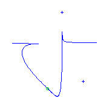
There can also be two flexes.
For any choice of two flexes, there will be two curves.
The two flexes can either be adjacent
 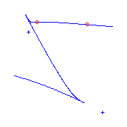
or they are not adjacent
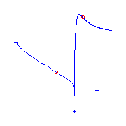
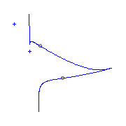
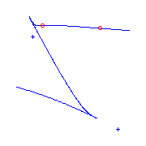
or they are not adjacent
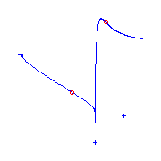
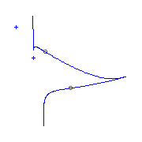
Additional ramification of type (0,2,3), a cusp, or (0,1,4), a
planar point.
If the curve has two cusps, then it also has a flex, which either lies
between a cusp and the beak (the curve on the left), or between the two cusps
(on the right).
The beak in the second curve is not so easy to see, so we magnify it in the
third picture.
 If the additional ramification is both a cusp and a
planar point, then there will also be a
flex, and there are three possibilities for its
placement, either between the cusp and the claw (on the left below), between
the planar point and the claw (on the right),
(The curve on the right has two complex nodes.)
or between the planar point and the cusp.
For any of these, there is a one-parameter family of such curves.
In this last case, the placement of the planar
point may be in either side of the node, and thus may also coincide with the
node.
We display all three possibilities below.
What is really interesting, though, is the family of curves we obtain when
there is a flex between the
planar point and the
beak, as the flex approaches the planar point.
The very last picture is when the flex collides with the planar point,
producing a claw. (The difference between this picture and those that preceed
it corresponds to a fractional linear transformation. This picture is
displayed above.)
If the additional ramification is both a cusp and a
planar point, then there will also be a
flex, and there are three possibilities for its
placement, either between the cusp and the claw (on the left below), between
the planar point and the claw (on the right),
(The curve on the right has two complex nodes.)
or between the planar point and the cusp.
For any of these, there is a one-parameter family of such curves.
In this last case, the placement of the planar
point may be in either side of the node, and thus may also coincide with the
node.
We display all three possibilities below.
What is really interesting, though, is the family of curves we obtain when
there is a flex between the
planar point and the
beak, as the flex approaches the planar point.
The very last picture is when the flex collides with the planar point,
producing a claw. (The difference between this picture and those that preceed
it corresponds to a fractional linear transformation. This picture is
displayed above.)
We also have curves with two planar points and one
flex.
Each choice of this ramification gives two curves, and there are two isotopy
classes of this ramification; either the planar
points are adjacent
or they are not.
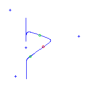
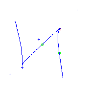
We also have curves with one planar point and
three flexes.
Each choice of this ramificaion gives three curves.
Either the planar point is adjacent to the beak
or it is not.
 Still need to draw curves with a beak, cusp, and three flexes
Still need to draw curves with a beak, cusp, and three flexes
Additional ramification only flexes.
I have not yet drawn the 5 curves with 5 flexes and a beak.
Previous: 5.14 Quintics with a box point
Next: 5.16 Quintics with a ramification
of order at least 5
Up: 5. Maximally Inflected Quintics